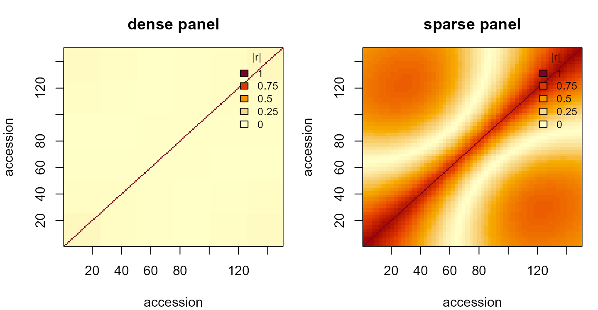
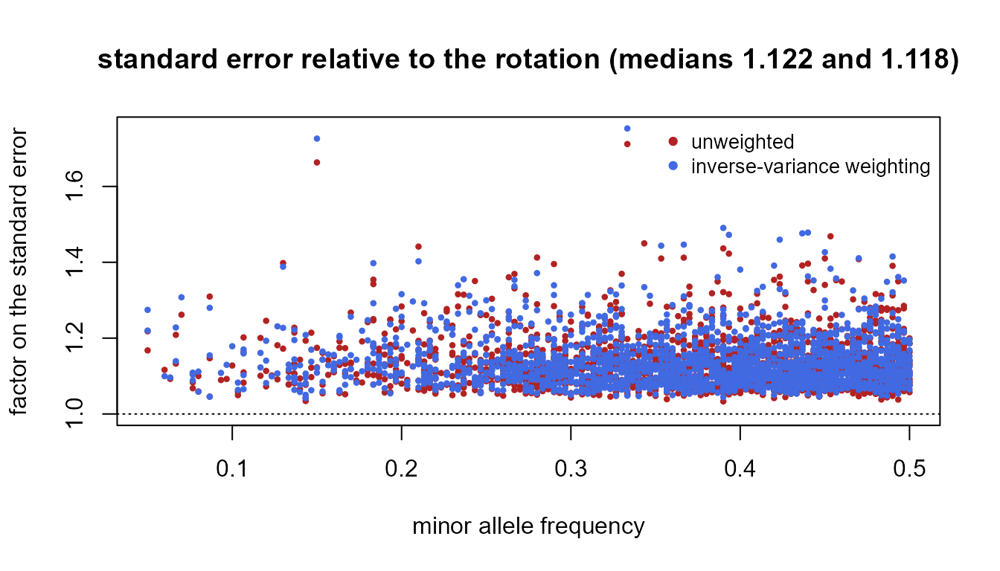
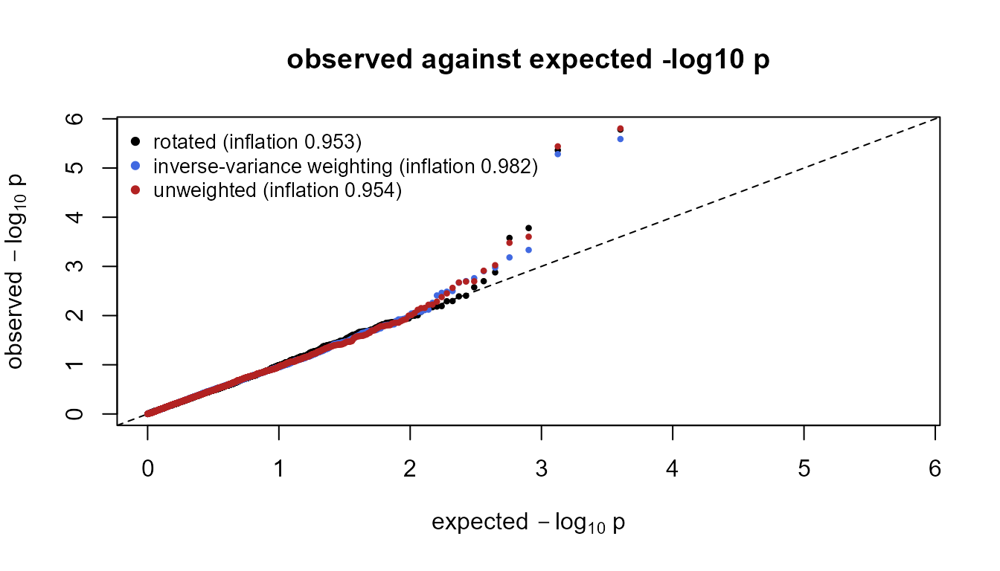
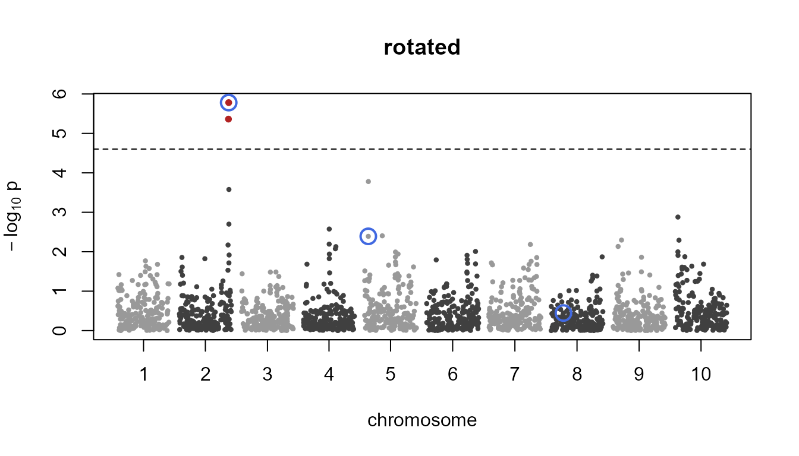
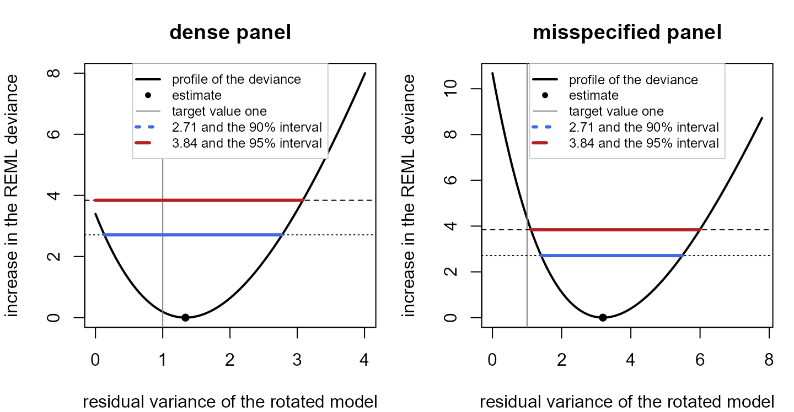

Rotated two-stage GWAS with rotationGWAS
Yawar Habib and Hans-Peter Piepho
Source:vignettes/rotationGWAS.Rmd
rotationGWAS.RmdThe rotationGWAS package
A genome-wide association study (GWAS) in plant breeding is often conducted in two stages. The first stage analyses the field trial and yields one adjusted mean per accession. The second stage uses these means as the response of a marker-based association model with a relationship matrix. In an unbalanced trial the adjusted means are estimated with unequal precision and are correlated, but most GWAS packages treat them as independent observations of equal precision, because they take no variance-covariance matrix of the means. rotationGWAS carries that matrix into the second stage by the rotation of Piepho et al. (2012), and shows beforehand, for every marker, what the usual approximations would cost.
Theoretical background
Let be the vector of adjusted means of accessions from the first stage and their variance-covariance matrix. The second-stage model for one marker is
with the covariates (for example principal components), the marker dosages with effect , the accession genetic effect with the relationship matrix , and the estimation error of the means, whose covariance is known from the first stage. Routine two-stage analyses replace by (the unweighted analysis) or by its diagonal (inverse-variance weighting).
The rotation is the symmetric matrix . Pre-multiplying the means and every term of the model by it gives
so the estimation errors of the rotated means are independent with unit variance and the rotated model is an ordinary mixed-model GWAS with the kernel and a residual variance whose target value is one. With known variance components the rotated two-stage analysis reproduces the single-stage analysis of the plot data. The rotated intercept is a column with varying entries, which is why the rotated inputs cannot be passed to software that builds its own intercept.
Application in the package
The package starts after the first stage and follows the steps of Habib and Piepho (2026):
-
rotation()aligns the inputs by accession name, builds , rotates the means, the intercept, the covariates and the relationship matrix, and fits the model without a marker with the residual variance estimated and fixed at one. -
efficiency()andestimation_share()give, before any scan, the standard error of every marker’s effect under inverse-variance weighting and under the unweighted analysis relative to the rotation, and the share of the variance of the means that is estimation error. -
genome_scan()tests every marker with the variance components held at the model without a marker, under the rotation and, for comparison, under the two approximate schemes. -
specification_test()tests the residual variance of the rotated model against one. -
independent_effect()extends the model by an effect independent across accessions when that test rejects; the scan can then run under the extended model. -
refit_markers()refits markers close to the significance threshold with the marker in the model and the residual variance fixed at one.
Every object has a print method, the efficiency and the
scan have a summary, and the rotation, the efficiency, the
scan and the specification test have a plot.
The inputs
All inputs are matched by accession name, so each must carry the names.
-
means: a named numeric vector of the adjusted means, best linear unbiased estimates with the accessions fixed in the first stage. -
Omega: their variance-covariance matrix from the first stage, with the names as dimnames. The matrix itself, not its inverse and not a correlation matrix. A diagonal matrix built from standard errors alone is accepted;rotation()then says that the analysis is inverse-variance weighting, and the functions that need the full matrix refuse it. -
relationship: the relationship matrix among the accessions on its original scale; it may be singular. -
covariates: an optional numeric matrix with the names as row names, for example principal components. The intercept is added by the package. -
markers: a numeric matrix of dosages (0, 1, 2), accessions in rows and markers in columns, complete; missing calls are imputed before the analysis. - A map with the columns
marker,chromosomeandpositionis used only by the plots along the genome.
Worked example
The data
The package ships a simulated population and three simulated trials
of it (?panels). The population has 150 inbred lines in 15
families from 24 founders in three subpopulations, with 1,998 markers on
ten chromosomes. The trials are rolling panels: each line is grown in
consecutive environments with three replicates, its window rolling
evenly over the environments.
G <- panel_genotypes$markers # dosages, 150 lines x 1,998 markers
A <- panel_genotypes$relationship # VanRaden's matrix, scaled to a mean diagonal of one
Q <- panel_genotypes$covariates # the first three principal components
map <- panel_genotypes$map
panels <- list(dense = panel_dense, sparse = panel_sparse, misspecified = panel_misspecified)
knitr::kable(data.frame(
panel = names(panels),
environments = sapply(panels, function(p) p$design$environments),
per_line = sapply(panels, function(p) paste(range(p$design$environments_per_accession), collapse = " to ")),
plots = sapply(panels, function(p) p$design$plots),
lines_per_environment = sapply(panels, function(p) round(p$design$accessions_per_environment, 1)),
independent_effect = sapply(panels, function(p) p$truth$independent_variance),
row.names = NULL), caption = "The three trials. The genetic variance carried by the relationship matrix is 10 in each.")| panel | environments | per_line | plots | lines_per_environment | independent_effect |
|---|---|---|---|---|---|
| dense | 8 | 3 to 3 | 1350 | 56.2 | 0 |
| sparse | 60 | 3 to 3 | 1350 | 7.5 | 0 |
| misspecified | 8 | 1 to 6 | 1437 | 59.9 | 6 |
The dense and the sparse panel have the same lines, replication and number of plots and differ only in how many lines share an environment. The misspecified panel is the dense design with unequal replication and a genetic effect independent across lines added to the data, which the relationship matrix does not represent.
The first stage
The first stage is a mixed model for the plot data whose terms depend on the design of the trial. For the shipped panels it is the paper’s model: line and environment as fixed effects, replicate within environment and line-by-environment as random effects. The adjusted means are the estimated marginal means of the lines and their variance-covariance matrix is the Kenward-Roger adjusted one, both from emmeans. This chunk repeats the first stage of the dense panel and checks it against the shipped values; any first-stage software that yields the means and their full variance-covariance matrix can take its place.
plots <- panel_dense$plots
head(plots, 3)
#> accession environment replicate y
#> 1 L001 E01 1 47.44
#> 2 L001 E02 1 39.40
#> 3 L001 E03 1 43.69
## The first-stage model, fitted by REML.
m1 <- lme4::lmer(y ~ accession + environment + (1 | environment:replicate) + (1 | accession:environment),
data = plots, REML = TRUE)
## The adjusted means and their variance-covariance matrix.
emm <- emmeans::emmeans(m1, ~ accession, mode = "kenward-roger")
s1 <- summary(emm)
means <- setNames(s1$emmean, as.character(s1$accession))
Omega <- as.matrix(vcov(emm))
dimnames(Omega) <- list(names(means), names(means))
all.equal(means, panel_dense$means)
#> [1] TRUE
all.equal(Omega, panel_dense$Omega)
#> [1] TRUEThe rotation
## The rotation of the dense and of the sparse panel.
rd <- rotation(panel_dense$means, panel_dense$Omega, A, Q)
rs <- rotation(panel_sparse$means, panel_sparse$Omega, A, Q)
rd
#> Rotation of 150 adjusted means; 4 fixed effects (the rotated intercept and 3 covariates )
#> Omega: diagonal from 1.8 to 1.88 (ratio 1.04); mean |correlation| 0.0285, largest 0.0722; condition number 5.96
#> Model without a marker: genetic variance 14.42, residual variance 1.338 (target one)
#> With the residual variance fixed at one: genetic variance 15.75
rs
#> Rotation of 150 adjusted means; 4 fixed effects (the rotated intercept and 3 covariates )
#> Omega: diagonal from 7.14 to 22.6 (ratio 3.17); mean |correlation| 0.443, largest 0.915; condition number 517
#> Model without a marker: genetic variance 14.17, residual variance 1.325 (target one)
#> With the residual variance fixed at one: genetic variance 15.78The print summarises and gives the model without a marker. The plot shows the structure of : in the dense panel the means are nearly uncorrelated, in the sparse panel the lines that share environments are strongly correlated, because the environment effects are estimated from few lines.
## The absolute correlations of the adjusted means, in the order of the lines.
op <- par(mfrow = c(1, 2), mar = c(4, 4, 3, 1))
plot(rd, main = "dense panel")
plot(rs, main = "sparse panel")
par(op)The loss of precision before the scan
The standard error of a marker effect under inverse-variance weighting and under the unweighted analysis, relative to the rotation, follows from , the genetic variance and the genotypes without a scan. The genetic variance is taken from the rotated model without a marker with the residual variance fixed at one.
## The factor on the standard error of every marker, for both panels.
ed <- efficiency(rd, G)
es <- efficiency(rs, G)
summary(ed)
#> Standard error of the marker effect relative to the rotation (factor at or above one), over 1998 markers
#> median 95% max
#> inverse-variance 1 1 1
#> unweighted 1 1 1
#> Genetic variance 15.75 (rotated model without a marker, residual variance fixed at one); estimation share 0.103, on the average semivariance
summary(es)
#> Standard error of the marker effect relative to the rotation (factor at or above one), over 1998 markers
#> median 95% max
#> inverse-variance 1.122 1.261 1.753
#> unweighted 1.118 1.262 1.712
#> Genetic variance 15.78 (rotated model without a marker, residual variance fixed at one); estimation share 0.44, on the average semivarianceIn the dense panel the factors are one: the three schemes are
equivalent and nothing is lost by the approximate weightings. In the
sparse panel the standard error under the approximate weightings is
larger than under the rotation by a median of about twelve per cent, and
at single markers by more than seventy per cent; on the variance scale
the median loss of precision is about twenty per cent. The plot shows
the factors against the allele frequency; type = "genome"
with the map shows them along the genome.
plot(es)
## The five markers that lose most under the unweighted analysis.
knitr::kable(head(es[order(-es$unweighted), ], 5), digits = 3, row.names = FALSE)| marker | maf | se_rotated | inverse_variance | unweighted |
|---|---|---|---|---|
| chr09_0073 | 0.333 | 1.497 | 1.753 | 1.712 |
| chr07_0007 | 0.150 | 0.695 | 1.726 | 1.663 |
| chr07_0123 | 0.453 | 0.584 | 1.383 | 1.468 |
| chr05_0070 | 0.343 | 0.415 | 1.334 | 1.450 |
| chr06_0094 | 0.210 | 0.478 | 1.403 | 1.441 |
estimation_share(rs)
#> Estimation share 0.44: ASV of the estimation error 12.49 against 15.89 for the genetic part (genetic variance 15.78, rotated model without a marker, residual variance fixed at one)The genome scan
genome_scan() tests every marker with the ratio of the
residual to the genetic variance held at the model without a marker and
the residual scale re-estimated at each marker (the P3D approximation),
by a t test on
degrees of freedom with a Bonferroni threshold over the markers tested.
Each scheme fits its own model without a marker.
## The scan of the sparse panel under the three schemes.
ss <- genome_scan(rs, G, scheme = c("rotated", "inverse_variance", "unweighted"))
summary(ss)
#> Genome scan of 150 accessions, 4 fixed effects, 145 degrees of freedom per marker; Bonferroni threshold 4.602 in -log10 p at alpha 0.05
#> scheme genetic residual boundary inflation tested significant
#> rotated 14.17 1.32500 none 0.9532 1998 2
#> inverse_variance 24.17 0.05009 none 0.9823 1998 2
#> unweighted 21.40 1.57000 none 0.9542 1998 2
#>
#> Strongest markers, inverse_variance:
#> marker beta se neglog10p
#> chr02_0185 2.286 0.4670 5.589
#> chr02_0184 2.252 0.4759 5.282
#> chr05_0018 1.547 0.4316 3.334
#> chr02_0187 1.416 0.4066 3.182
#> chr10_0012 1.407 0.4208 2.977
#>
#> Strongest markers, rotated:
#> marker beta se neglog10p
#> chr02_0185 2.079 0.4160 5.781
#> chr02_0184 2.049 0.4291 5.363
#> chr05_0018 1.564 0.4044 3.780
#> chr02_0187 1.356 0.3626 3.579
#> chr10_0012 1.235 0.3771 2.879
#>
#> Strongest markers, unweighted:
#> marker beta se neglog10p
#> chr02_0185 2.285 0.4562 5.804
#> chr02_0184 2.244 0.4659 5.440
#> chr05_0018 1.612 0.4292 3.603
#> chr02_0187 1.467 0.3989 3.480
#> chr10_0012 1.398 0.4142 3.024The QQ plot sets the observed against those expected under no association, with the genomic inflation factor of each scheme; the Manhattan plot shows one scheme along the genome, with the threshold, the significant markers in red and chosen markers circled, here the three causal markers of the simulation.
plot(ss, type = "qq")
causal <- panel_sparse$truth$causal
plot(ss, type = "manhattan", scheme = "rotated", map = map, highlight = causal)
## The three causal markers under the three schemes.
knitr::kable(ss[ss$marker %in% causal, c("marker", "scheme", "beta", "se", "neglog10p", "significant")],
digits = 3, row.names = FALSE)| marker | scheme | beta | se | neglog10p | significant |
|---|---|---|---|---|---|
| chr02_0185 | rotated | 2.079 | 0.416 | 5.781 | TRUE |
| chr05_0017 | rotated | 1.136 | 0.389 | 2.390 | FALSE |
| chr08_0044 | rotated | 0.359 | 0.390 | 0.446 | FALSE |
| chr02_0185 | inverse_variance | 2.286 | 0.467 | 5.589 | TRUE |
| chr05_0017 | inverse_variance | 1.147 | 0.432 | 2.055 | FALSE |
| chr08_0044 | inverse_variance | 0.704 | 0.424 | 1.003 | FALSE |
| chr02_0185 | unweighted | 2.285 | 0.456 | 5.804 | TRUE |
| chr05_0017 | unweighted | 1.190 | 0.427 | 2.220 | FALSE |
| chr08_0044 | unweighted | 0.672 | 0.420 | 0.952 | FALSE |
The marker with the largest effect is found by every scheme and the
two others by none; one dataset cannot show the difference in power,
which the paper’s simulations measure. What it shows is the standard
error: at the first causal marker the standard errors of the scan under
the two approximate schemes exceed the rotation’s by close to the
factors that efficiency() predicted for it. The scan’s
standard errors carry a residual scale estimated at each marker, so the
agreement is close, not exact, and varies from marker to marker.
knitr::kable(es[es$marker == causal[1], ], digits = 3, row.names = FALSE)| marker | maf | se_rotated | inverse_variance | unweighted |
|---|---|---|---|---|
| chr02_0185 | 0.29 | 0.452 | 1.096 | 1.089 |
The residual variance of the rotated model
After the rotation the estimation errors of the means have unit
variance, so the residual variance of the rotated model without a marker
is one when the relationship matrix accounts for all genetic covariance
among the accessions. specification_test() tests it against
one by the increase in the REML deviance when it is fixed at one:
one-sided against 2.71, the test the paper recommends, because a genetic
structure missing from the model raises the residual variance; and
two-sided against 3.84. Both tests can be read from the
profile-likelihood intervals, which the plot shows on the profile of the
deviance.
std <- specification_test(rd)
sts <- specification_test(rs)
rm <- rotation(panel_misspecified$means, panel_misspecified$Omega, A, Q)
stm <- specification_test(rm)
sts
#> Residual variance of the rotated model without a marker: 1.325 (target one; genetic variance 14.17, or 15.78 with the residual fixed at one)
#> Increase in the REML deviance when the residual variance is fixed at one: 0.3487
#> One-sided test (residual above one): statistic 0.3487 against 2.71, not rejected (p = 0.277)
#> Two-sided test: increase 0.3487 against 3.84, not rejected (p = 0.555)
#> Profile-likelihood intervals for the residual variance: 90% [0.5319, 2.496], 95% [0.4206, 2.767]
stm
#> Residual variance of the rotated model without a marker: 3.192 (target one; genetic variance 21.91, or 32.52 with the residual fixed at one)
#> Increase in the REML deviance when the residual variance is fixed at one: 4.335
#> One-sided test (residual above one): statistic 4.335 against 2.71, REJECTED: the residual variance is above one; genetic covariance is missing from the model, or the first stage understates the estimation error (see independent_effect()) (p = 0.0187)
#> Two-sided test: increase 4.335 against 3.84, REJECTED: the residual variance differs from one (p = 0.0373)
#> Profile-likelihood intervals for the residual variance: 90% [1.407, 5.485], 95% [1.112, 5.994]
op <- par(mfrow = c(1, 2), mar = c(4, 4, 3, 1))
plot(std, main = "dense panel")
plot(stm, main = "misspecified panel")
par(op)Neither the dense nor the sparse panel rejects: their data were simulated with the covariance of the relationship matrix. The misspecified panel rejects, since its data carry a genetic effect independent across lines with a variance of 6 against the genetic variance of 10 in the relationship matrix. The rejection says that genetic covariance is missing from the model, if the first stage is correctly specified: a first stage that understates the estimation error of the means also raises the residual variance. The extension the paper examines adds such an effect to the model, with the identity as its kernel before the rotation and after it. Without the rotation this effect and the residual error have the same covariance matrix and only the sum of their variances can be estimated; after it the two can be separated, weakly when is close to proportional to the identity, as it is on the dense design with equal replication, which is why this panel has unequal replication.
## The model with the independent effect, against the additive model.
ie <- independent_effect(rm)
ie
#> Rotated model with the relationship matrix and an effect independent across accessions (kernel WW')
#> Genetic variance 16.6, independent effect 8.292, residual variance 0 (target one) [boundary: ve_zero]
#> The residual variance is at the boundary of zero: with it, this model is the unweighted analysis of the adjusted means.
#> Against the additive model (genetic variance 21.91, residual 3.192): deviance lower by 5.963 (p = 0.0073 on the boundary mixture), AIC lower by 3.963
#> With the residual variance fixed at one: genetic variance 16.66, independent effect 6.407
#> Profile-likelihood intervals for the residual variance under this model: 90% [0, 2.11], 95% [0, 2.793]The deviance falls and the independent effect is clearly present. The free fit puts the residual variance on the boundary of zero, attributing all of the estimation error to the independent effect; with the residual variance fixed at its known value of one, the independent effect is estimated close to its generating value of 6. The paper adds the effect to the model when the test rejects, but does not evaluate a scan under the extended model. The package offers that scan so that the analysis can follow the model the test led to; when the residual variance is at zero that model is the unweighted analysis of the adjusted means, which the scan says.
sm <- genome_scan(rm, G, model = ie)
#> Warning in genome_scan(rm, G, model = ie): the residual variance of the model with the independent
#> effect is at the boundary of zero; under it this scan is the unweighted analysis of the adjusted
#> means
summary(sm)
#> Genome scan of 150 accessions, 4 fixed effects, 145 degrees of freedom per marker; Bonferroni threshold 4.602 in -log10 p at alpha 0.05; model: additive + independent effect
#> scheme genetic independent residual boundary inflation tested significant
#> rotated 16.6 8.292 0 ve_zero 0.888 1998 2
#>
#> Strongest markers, rotated:
#> marker beta se neglog10p
#> chr02_0185 2.577 0.5036 6.014
#> chr02_0184 2.567 0.5165 5.730
#> chr05_0017 2.019 0.4796 4.352
#> chr05_0023 1.725 0.4142 4.273
#> chr05_0018 1.907 0.5030 3.659The components can instead be held at the fit with the residual
variance fixed at its known value of one, with
fit = "residual_one"; the residual scale is still
re-estimated at each marker, as in every scan.
sm1 <- genome_scan(rm, G, model = ie, fit = "residual_one")
summary(sm1)
#> Genome scan of 150 accessions, 4 fixed effects, 145 degrees of freedom per marker; Bonferroni threshold 4.602 in -log10 p at alpha 0.05; model: additive + independent effect, residual variance fixed at one
#> scheme genetic independent residual boundary inflation tested significant
#> rotated 16.66 6.407 1 none 0.923 1998 2
#>
#> Strongest markers, rotated:
#> marker beta se neglog10p
#> chr02_0185 2.579 0.5034 6.025
#> chr02_0184 2.557 0.5148 5.725
#> chr05_0017 1.972 0.4794 4.186
#> chr05_0023 1.702 0.4166 4.139
#> chr05_0018 1.848 0.5050 3.453Markers close to the threshold
The scan holds the variance ratio at the model without a marker. With
the marker in the model and the residual variance fixed at one, the
rotated fit reproduces the single-stage analysis of the plot data when
the variance components are known. The paper’s rule is to refit the
markers whose scan statistic lies within 1.5 units of
of the threshold, on either side; refit_markers() does that
for the markers a scan selects, or for named markers.
## The markers of the sparse panel within 1.5 units of the threshold.
rf <- refit_markers(rs, G, scan = ss, window = 1.5)
knitr::kable(as.data.frame(unclass(rf)), digits = 3, row.names = FALSE)| marker | scan_neglog10p | genetic | beta | se | t | neglog10p | boundary | significant |
|---|---|---|---|---|---|---|---|---|
| chr02_0184 | 5.363 | 12.89 | 2.053 | 0.428 | 4.795 | 5.398 | FALSE | TRUE |
| chr02_0185 | 5.781 | 12.61 | 2.082 | 0.415 | 5.021 | 5.828 | FALSE | TRUE |
| chr02_0187 | 3.579 | 13.92 | 1.357 | 0.363 | 3.739 | 3.576 | FALSE | FALSE |
| chr05_0018 | 3.780 | 13.98 | 1.571 | 0.403 | 3.894 | 3.825 | FALSE | FALSE |
## The three causal markers in the dense panel, named.
sd <- genome_scan(rd, G)
rfd <- refit_markers(rd, G, which = panel_dense$truth$causal, scan = sd)
knitr::kable(as.data.frame(unclass(rfd)), digits = 3, row.names = FALSE)| marker | scan_neglog10p | genetic | beta | se | t | neglog10p | boundary | significant |
|---|---|---|---|---|---|---|---|---|
| chr02_0185 | 8.172 | 11.35 | 2.372 | 0.380 | 6.236 | 8.334 | FALSE | TRUE |
| chr05_0017 | 5.037 | 13.25 | 1.673 | 0.363 | 4.606 | 5.051 | FALSE | TRUE |
| chr08_0044 | 0.097 | 15.90 | 0.129 | 0.376 | 0.343 | 0.135 | FALSE | FALSE |
The refit moves each statistic by at most a few tenths in , and the decisions stand.
Further notes
- Multi-locus models: several markers fitted together are further
columns of the design matrix and are rotated in the same way. The
rotated pieces are in the
rotationobject (y,X,K,W), so any mixed-model fit of the rotated data with the residual variance fixed at one is the rotated analysis of that model. - Missing marker calls must be imputed before the analysis; after the rotation a cell of the marker matrix is no longer one accession’s call.
- The relationship matrix may be singular, for example a centred VanRaden matrix; the engine works in the error-contrast form and needs no ones matrix added.
- Size: the efficiency of 59,206 markers at 159 accessions takes a few seconds, the scan under one scheme about as long; the refit is a REML fit per marker, and the independent effect is a fit with three variance components.
References
Habib, Y., and H.-P. Piepho, 2026 Exact weighting in two-stage genome-wide association analysis: when does it matter? Manuscript.
Piepho, H.-P., J. Möhring, T. Schulz-Streeck and J. O. Ogutu, 2012 A stage-wise approach for the analysis of multi-environment trials. Biometrical Journal 54: 844-860.
VanRaden, P. M., 2008 Efficient methods to compute genomic predictions. Journal of Dairy Science 91: 4414-4423.